Heavyweight Champ
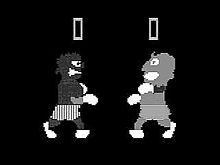A series of boxing games and the first video game to feature hand-to-hand fighting. Players were given boxing glove controllers that moved up and down to perform high and low punches. The original 1976 version is considered a lost game, but the remade 1984 version continues to circulate.
Champion Boxing
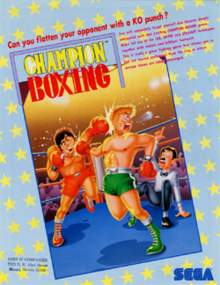Champion Boxing (チャンピオンボクシング, "Boxing Champion") was developed and published by Sega for the Sega SG-1000, and later ported to the arcades in Japan and Europe. It was Sega-AM2 founder and leader Yu Suzuki's debut creation, as well as that of AM7's Rieko Kodama.
Karate Champ
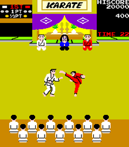
Karate Champ popularized the 1v1 fighting game genre. A variety of moves
can be performed using the dual-joystick controls, using a best-of-three
matches format like later fighting games, and it features training bonus
stages. The Game used a point system to determine the winner instead of a health bar.
Yie Ar Kung-Fu
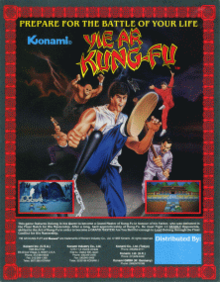The user plays as a (Bruce Lee based) Kung Fu master named Oolong who must fight all the martial arts masters to win the title of "Grand Master". Controlled with a joystick and buttons, Oolong can combine moves while standing, crouching or jumping. The game was a comercial success in Europe and was the best-selling game of 1986 in the UK. Yie Ar Kung-Fu established the basis for modern fighting games.
The Way of the Exploding Fist
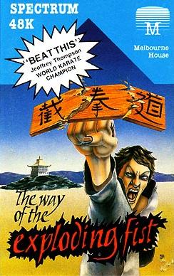The Way of the Exploding Fist was one of the first games to include realistic graphics and movements. Similar to Karate Champ,opponents become incresingly harder to fight after each level. Scoring is based off of the real life scoring system called shobu nihon kumite which is used in many traditional styles of karate. Using the joystick, direction keysand a "fire" key, the player can achieve up to 18 different movements, including jumping & roundhouse kicks. There are also defensive moves including blocks and somersaults.
Street Fighter
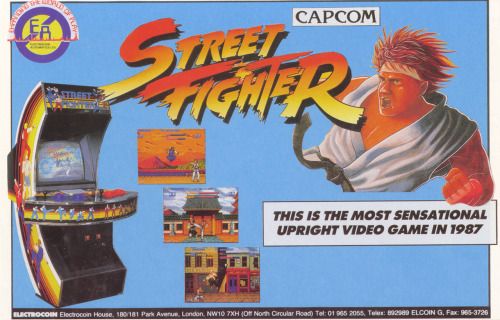
The first competitive fighting game produced by the company and
the inaugural game in the Street Fighter series. Street Fighter
introduced some of the conventions made standard in later games,
such as the six button controls and the use of command based special techniques.
The player fights opponents either controlled by computer or another player,
each match is 3 rounds. If the fight lasts longer than the alloted 30 seconds,
he winner with the highest health wins. The game was commercially successfull in arcades.
Fatal Fury: King of Fighters
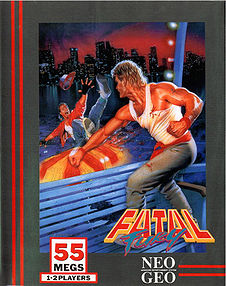
Fatal Fury was SNK's first fighting game for the Neo Geo system and served as the inaugural
game in their Fatal Fury series, as well as the first game to depict the fictional
"King of Fighters" tournament (which became the basis for the later King of Fighters games).
Many of SNK's popular characters made their debut in this game. The most novel aspect of Fatal Fury were
the addition of two-lane battles. Many stages featured two rows, a background row and a foreground row.
Players can change between rows at any time other than in the Single Player Mode,
where they have to wait for the CPU opponent to change rows before they can in almost every stage.
Street Fighter II: The World Warrior
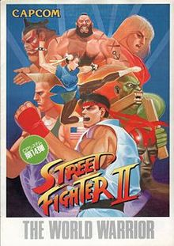The sequel to Street Fighter, Street Fighter II adds multiple playable characters, each with their own fighting style, and features such as command-based special moves, a six-button configuration, a combo system, and competitive two-player multiplayer. By 1994, Street Fighter II had been played by at least 25 million people in the United States, at home and in arcades. The game was Capcom's bestselling game until 2013 (when it was surpassed by Resident Evil 5) and their bestselling game on a single platform.
Mortal Kombat
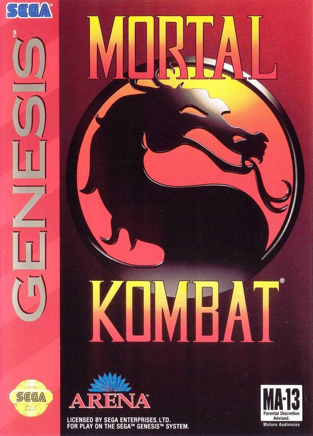Mortal Kombat takes place on a fictional island in Earthrealm, where a tournament is being held at Shang Tsung's Island, on which seven locations serve as stages in the game. The fighter that drains the opponent's health bar first wins the round, and the first to win two rounds wins the match. Mortal Kombat was the first game to introduce special moves performed only using the joystick. The game also sparked controversy for depicting extreme violence and gore using realistic graphics, resulting in age-specific content ratings for games. The game also introduced the fatality move, where a character would be executed as a finishing move.
Virtua Fighter
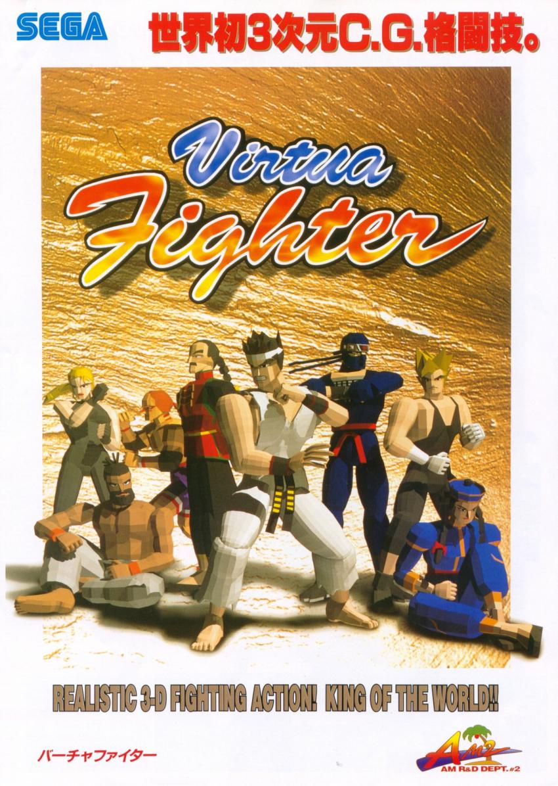Made by AM2, a development group within Sega, Virtua Fighter's action takes place in 3D. The images were created using wireframe and flat-shaded quads. Beyond 3D, it retained the staple of multiple characters, each with their own distinctive moves. Single player mode allows the player to fight against 8 different characters, followed by a boss fight. The story of the game falls about half a century after WWII, when the Japanese have developed the perfect martial art, and the World Fighting Tournament is about to start, where fighters from around the world gather to see who is the best.
Tekken

Created as Namco's version of a 3D fighting game to compete against Virtua Fighter, Tekken is similar to many other fighting games where the player fights a series of fighters. Unlike other games though, Tekken allows the player to control each of their character's limbs independently. After Tekken was ported to the PlayStation, the game was widely well recieved by critics and became the first PlayStation game to sell over a million units in the UK and is attributed to the PlayStation console's success.
Soul Edge
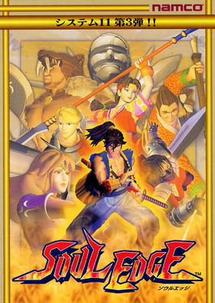Soul Edge was the first installment of Namco's 3D fighting Soul Series. The player is on a quest to find the Soul Edge, and was developed as an experiment by Namco to explore the possibilities of a weapon-based fighting game. It was the first motion capture based video game created by using passive optical system markers. In 1997, the game was ported to PlayStation and release in North America with the title Soul Blade.
Marvel vs. Capcom: Clash of Super Heroes
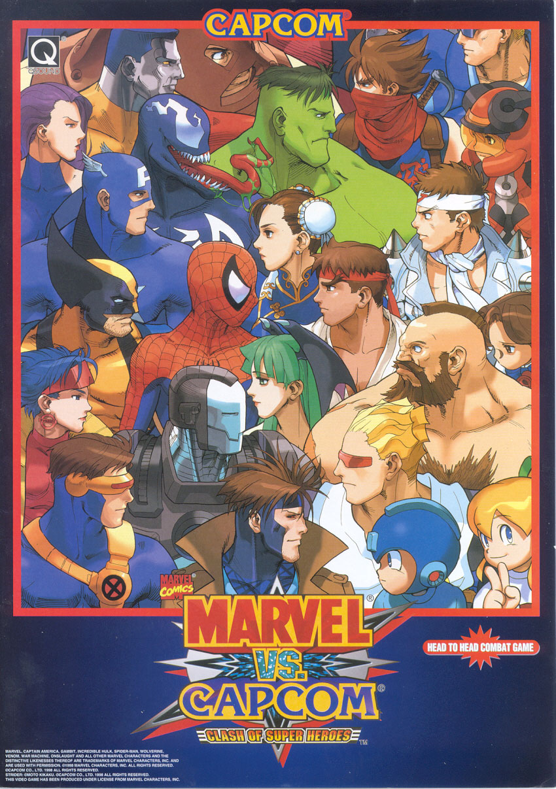The third installment in the Marvel vs. Capcom series, which features characters from Capcom's video game franchises and comic book series published by Marvel Comics. The game debuted in Japanese and North American arcades in 1998. It was ported to the Dreamcast and later PlayStation and was praised for its visuals and gameplay.
Super Smash Bros.

Super Smash Bros. was released in 1999 for the Nintendo 64. It was later released worldwide after selling over a million
copies in Japan. Up to 4 players could play the game in multiplayer mode, the winner being the one with the most knock outs.
Players could play as 12 different and could play on 9 different stages. There was also a single player adventure mode and
minigames.
SNK vs. Capcom: The Match of the Millennium
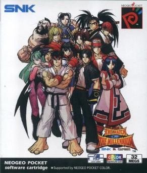Features 26 characters from SNK and Capcom, eight of which are hidden. Play options includes 2-fighter tag teams, 3-fighter queue teams, and of course, one-on-one. After that, the player can choose either a Capcom-style level gauge, an SNK-style charge gauge, or a 'neutral' meter that enhances super attacks if full. As a side feature, there is Olympic mode, where one can play themed minigames.
Guilty Gear X
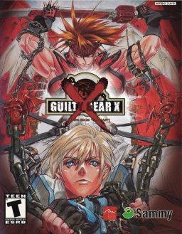Guilty Gear X is a continutation of Guilty Gear. A four-button game, its instant-kill techniques were weakened and a survival mode was added to the previous game's three modes. The Dreamcast and PS2 versions have sold over 100,000 copies in Japan; they have been praised for their graphics, controls and characters but criticized for their lack of replay value. The fight system has a four-main-attack-button configuration: punch, kick, slash and heavy slash. Players may also launch taunt attacks, with their main objective to reduce the opponent's health to zero in a predetermined time.[6] To win a fight a player must accumulate two points, with each round won earning a point. Guilty Gear X has features common in fighting games: combos, aerial attacks and counterattacks. A new feature is the Roman Cancel, which allows a player to cancel their move and its aftereffects to make other attacks.
Super Smash Bros. Melee

Developed by HAL Laboratory and published by Nintendo for the GameCube video game console. It is the second game in the Super Smash Bros. series, following the 1999 release of the original game. It was released in Japan and North America in 2001, and in Europe and Australia in 2002. Melee includes all playable characters from the first game in the series on the Nintendo 64 and also adds characters from franchises such as Fire Emblem, of which no games had been released outside Japan at the time. Melee's gameplay system offers an unorthodox approach to the fighting game genre with a counter that measures damage with increasing percentages, representing the knockback the character will experience, rather than a depleting health bar seen in most fighting games. It has sold more than 7 million copies as of 2008 and is the GameCube's most popular game. It is considered to be one of the best video games of all time.
Melty Blood
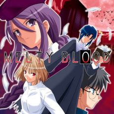In the beginning of August 2001, Shiki Tohno hears of a new series of murders in Misaki Town, similar to the ones that took place in Tsukihime, in the last weeks of October 1999. Whilst searching for the murderer he meets Sion Eltnam Atlasia who initiates a fight with him, attempting to capture him. After the fight she reveals that her reason for trying to capture him is to get in contact with the "True Ancestor" (referring to Arcueid) so that she may acquire information on the "cure for vampirism". The story moves through a series of fights. Depending on the outcome of the fight the story will branch in one of two ways. Ultimately this corresponds to the ending of the game. Melty Blood makes use of widely used concepts in fighting games such as cancels (canceling a normal attack with a special attack before its animation ends, allowing for more complex and damaging combos) chain combos (normal moves that cancel into other normal moves) and the use of super bars (Magic Circuits). It also introduces Shielding, an advanced defensive technique. The game has gained a cult following.
Virtua Fighter 5
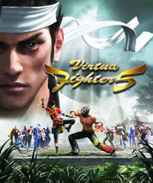
The fifth and final installment in Sega's Virtua Fighter series of arcade fighting games.
In the game, the 17 best fighters in the world begin their final phases of preparation.
They must learn from their prior mistakes and perfect every aspect of their mind, body, and soul -
for there is no room for mistakes in this competition. They are unaware that J6, the organization funding the tournament,
has sinister ulterior motives for the contest and the company's top secret Dural program is already underway.
In the organization's quest for world domination, the scientists at J6 are creating the ultimate fighting machine with human features.
The PlayStation 3 version debuted at #1 on the Japanese charts on February 20 and got to number 7 in the UK sales chart.
Super Smash Bros. Brawl
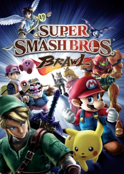The third installment in the Super Smash Bros. series, developed by Sora Ltd. and Game Arts and published by Nintendo for the Wii video game console. The number of playable characters in Brawl has grown from that in Super Smash Bros. Melee, although a few characters from Melee were cut in Brawl. Brawl is the first game in the series to have playable third-party characters. It includes a more extensive single-player mode than its predecessors, known as the Subspace Emissary (SSE). This mode is a plot-driven, side-scrolling beat 'em up featuring computer-generated cut scenes and a selection of playable characters. Super Smash Bros. Brawl received critically positive reviews,[9] with praise for the game's entertainment value, despite issues relating to its content loading times. The game's musical score, composed through a collaboration by 38 renowned video game composers, was lauded for its representation of different generations in gaming history.
Street Fighter IV
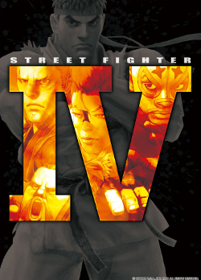The first original main entry in the series since Street Fighter III in 1997. The coin-operated arcade game version was released in Japan on July 18, 2008, with North American arcades importing the machines by August. The console versions for the PlayStation 3 and Xbox 360 were released in Japan on February 12, 2009, and were sold in North American stores as early as February 16, with a February 18 intended release date. Street Fighter IV has sold over 3.4 million units and upon its release, the game received universal critical acclaim; receiving universally high scores from many gaming websites and magazines. It has also been listed among the greatest video games of all time.
Mortal Kombat vs. DC Universe
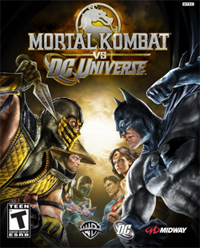Despite being a crossover, the game is considered to be the eighth installment in the main Mortal Kombat series, as evidenced by the naming of the tenth entry by this count: Mortal Kombat X. The game takes place after Raiden, Earthrealm's god of thunder, and Superman, Metropolis' defender, repel invasions from both their worlds. An attack by both Raiden and Superman simultaneously in their separate universes causes the merging of the Mortal Kombat and DC villains, Shao Kahn and Darkseid, resulting in the creation of Dark Kahn, whose mere existence causes the two universes to begin merging; if allowed to continue, it would result in the destruction of both. Intertwined within fight matches, which are played in a 3D fighter style, are new gameplay modes, such as "Free-Fall Kombat" or "Falling Kombat," which are activated automatically after throwing the opponent to a lower level in the arena.
Mortal Kombat (2011)

The game is the ninth main installment in the Mortal Kombat series and is a reboot of the franchise. The game was released for the PlayStation 3 and Xbox 360 systems in April 2011, and a PlayStation Vita port was released in May 2012. Upon release, Mortal Kombat received very positive reviews and won several awards for fighting game of the year. It was also a commercial success, selling more than two million copies in the first month alone. Due to its extremely violent content, the game was banned in Australia due to the lack of appropriate ratings category, and South Korea, and it has been reportedly indexed in Germany; the Australian ban was later lifted due to the introduction of an R18 classification and the game was released with many other R rated games in May 2013. During its release month, Mortal Kombat sold two million copies between both PlayStation 3 and Xbox versions.[120] Warner Bros. Interactive Entertainment, publisher of NetherRealm Studios’ Mortal Kombat, reported that Mortal Kombat had sold close to three million units as of August 2011.
Skull Girls
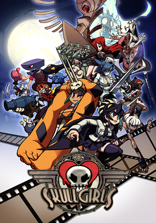Skullgirls is a 2D fighting game developed by Reverge Labs and published by Marvelous and Autumn Games. The game was released through the PlayStation Network and Xbox Live Arcade in North America, Europe, and Australia from April to May 2012, and later received a Japanese release by CyberFront for the PlayStation Network in February 2013. The engine and playstyle for Skullgirls were intentionally modeled after Marvel vs. Capcom 2: New Age of Heroes, incorporating several similar game mechanics such as tag team-based combat, character assists, snapbacks, and delayed hyper combos. The Skullgirls roster initially consisted of eight playable characters, all of them female: Filia, Cerebella, Peacock, Parasoul, Ms. Fortune, Painwheel, Valentine, and Double. Following the conclusion of the game's Indiegogo crowdfunding campaign, an additional five downloadable characters were developed, this time adding two males to the roster: Squigly, Big Band, Eliza, Beowulf, and Robo-Fortune. Overall, the game recieved mostly positive reviews.
Super Smash Bros. for Nintendo 3DS and Wii U
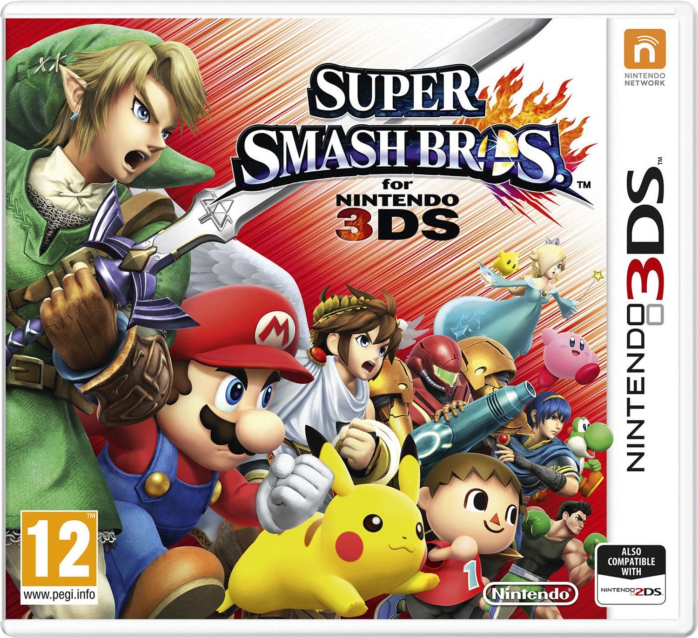 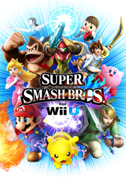The 3DS version was released in Japan in September 2014, and in North America, Europe, and Australia the following month. The Wii U version was released in North America, Europe, and Australia in November 2014, and in Japan the following month. Like the rest of the Super Smash Bros. series, Super Smash Bros. for Nintendo 3DS and Super Smash Bros. for Wii U are non-traditional fighting games where players use different attacks to weaken their opponents and knock them out of an arena. Both versions sold well, with the 3DS version selling over nine million copies worldwide by December 2017, and the Wii U version selling over five million during the same period.
Street Fighter V
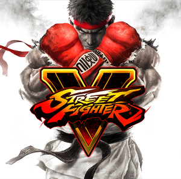Similar to the previous games in the Street Fighter series, Street Fighter V features a side-scrolling fighting gameplay system. The game also introduces the "V-Gauge", which builds as the player receives attacks and adds three new skills. The game features 16 characters at launch, with four of them being new to the series. A story mode and additional characters were added through updates and downloadable content. As of June 30, 2018, Capcom announced that Street Fighter V had shipped 2.1 million copies across the PS4 and PC platforms, digital downloads included. Though it accumulated lifetime sales is getting close to 2.5 million according to Yoshinori Ono in a recent interview.
Naruto Shippuden: Ultimate Ninja Storm 4
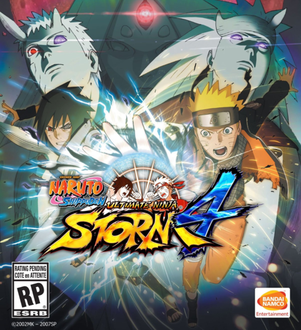Based on the popular manga and anime series Naruto by Masashi Kishimoto, for PlayStation consoles. In the Ultimate Ninja Series line, the player controls one of the characters within the Naruto anime and manga. The simple goal is to fight the opposing character and to win by reducing their health to zero. Along with the various weapons available to the characters also have their various special abilities taken straight from the series. Ultimate Ninja Storm 4 features gameplay akin to that of previous games in the series, in which players battle each other in 3D arenas. A returning feature which was omitted since the original Ultimate Ninja Storm is the ability to Wall Run. Players will be able to dynamically take to battle to the sides of the arenas, and battle on the walls of each stage. The game received generally positive reviews, with much praise going to the game's narrative and graphics.
Dragon Ball FighterZ

The gameplay is inspired by concepts from several other fighting games, namely the control scheme and team mechanics. Players each select three Dragon Ball Z characters to form a team, from an initial roster of 24. One character is controlled and can be switched with one of the other characters at any time. Players can also call one of their other characters to perform an "Assist" move, allowing simultaneous attacks and combos with the entire team. All three of the opponent's characters must be defeated to win the game.After its announcement, Dragon Ball FighterZ was met with great enthusiasm from fans of fighting games and the source material alike, with many saying it has the potential to be the next big competitive fighting game.The game gained praise regarding its art design and animation being faithful to the source material, as well as its fighting mechanics. The game shipped over two million copies a week after release, becoming the fastest selling Dragon Ball title. It also set a Steam record for the highest number of concurrent users for a fighting game
Super Smash Bros. Ultimate

Super Smash Bros. Ultimate is an upcoming crossover fighting game developed by Bandai Namco Studios and Sora Ltd. and published by Nintendo for the Nintendo Switch. It is the fifth installment in the Super Smash Bros. series, succeeding Super Smash Bros. for Nintendo 3DS and Wii U. Select characters will have alternate variations that can be selected or randomly picked as costumes, such as Bowser Jr. who has a selectable appearance to be any of the other Koopalings, but otherwise have the same set of powers and abilities.Several of the characters have received updates to their outfits, such as Mario having Cappy from Super Mario Odyssey accompanying him and Link wearing his outfit from The Legend of Zelda: Breath of the Wild. Newcomers to the series include the Inklings from Splatoon, Ridley from the Metroid series, Simon Belmont from the Castlevania series, King K. Rool from the Donkey Kong series, and Isabelle from the Animal Crossing series. New Echo Fighters include Princess Daisy from the Mario series, Chrom from Fire Emblem Awakening, Dark Samus from the Metroid Prime series, and Richter Belmont from the Castlevania series. The currently announced roster of playable characters in Ultimate is 74, the highest number of playable characters in any Super Smash Bros. game.
Other Upcoming Games
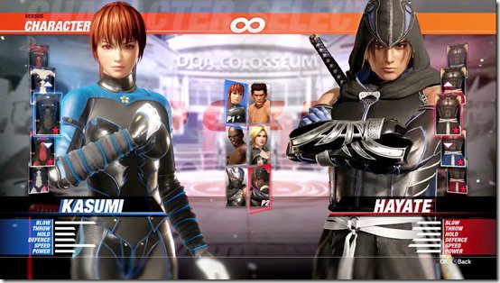 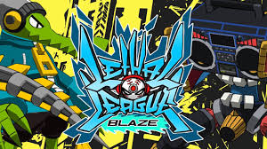
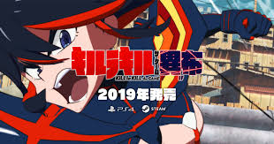
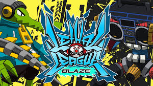
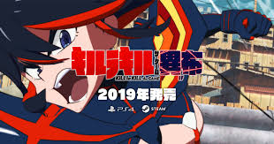
Dead Or Alive 6 (Feb)
Jump Force (Feb)
Lethal League Blaze (Spring)
Samurai Showdown (TBA)
Kill la Kill the Game: IF (TBA)
Conclusion
I chose to make a webpage that shows a timeline of different fighting games that have come out since the genre emerged
in the late 1970s. After talking about how almost everyone enjoyed playing Street Fighter for class, i thought it would
be interesting to look at how the genre has maintained its popularity. Years before the original Street Fighter was released,
games like Heavyweight Champion are still visually similar to fighting games being released currently. For example,
just by watching the gameplay of Yie Ar Kung Fu (1985) and comparing it to the most popular games in the genre like
Street Fighter (1987) and Mortal Kombat (1992) the games look similar. All three’s scoring are based on a time and a health bar,
and it seems all that the user does is move and punch. It seems like a simple concept, but it has continued to stay a popular
video game genre.
One game i decided to feature was Virtua Fighter, which was the first fighting game with 3D graphics and was easier to
learn how to play compared to other games. Battle Arena Toshinden (1994) was the game that fully brought the genre into 3D,
but Virtua Fighter gained popularity due to its 3 button system. In 1994, Capcom released a movie titled Street Fighter,
after the series, which shows how popular the series had become. Another film based on the franchise was also released in 2009.
In 1997, a film based on the Mortal Kombat series was released as well. Tekken, released in 1995, became one of the games
attributed to the PlayStation’s commercial success, which also shows how impactful fighting games had become.
As the genre progresses into the 1990s and 2000s, there is a rise in crossover games like Capcom vs. Marvel,
SNK vs. Capcom or the Super Smash Bros. Series. Super Smash Bros. Melee, released in 2001, is one of the games i grew up with
on the GameCube, and it is still considered one of the most popular video games of all time. Since the release of
Super Smash Bros. Melee, Nintendo has released a version of Smash for each console they have put out and tournaments are played
all across the world. In December, Nintendo is releasing Super Smash Bros. Ultimate, which will have 74 playable characters
ranging from the originals like Mario, to the newly announced Isabelle from the Animal Crossing series.
In 2012, The game Skull Girls was released, which i found incredibly interesting for two reasons.
One was that the game’s development was actually paid for through crowdfunding, since its publisher refused to pay for the development.
The second reason is that all of the eight original playable characters are female. To me, this shows a shift in fighting
games being less focused on the entertainment of males, to having a more all-inclusive audience.
Some of the last few games i included were Naruto Shippuden: Ultimate Ninja Storm 4 (2016), Dragon Ball FighterZ (2018)
and the upcoming Kill la Kill the Game: IF (2019). These games show a pattern in the popularity of games based on anime.
These illustrate an interesting shift in games becoming based on other media, rather than becoming other media like the Street
Fighter and Mortal Kombat films released in the 1990s.
Overall, I enjoyed putting this project together and i think it is interesting to see how consistent the genre of fighting
games have changed, but also have remained in popular culture as technology has changed and improved. When Super Smash Bros.
Ultimate is released in a few months, i know i will be playing it, and so will millions of other people across the world.